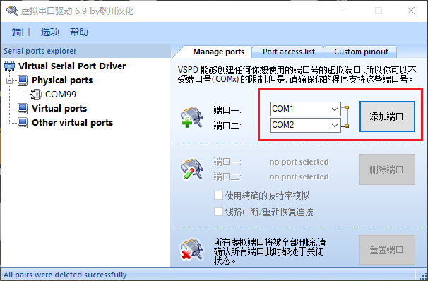
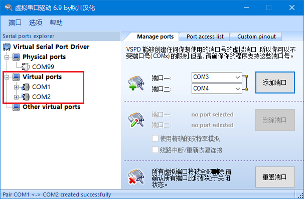
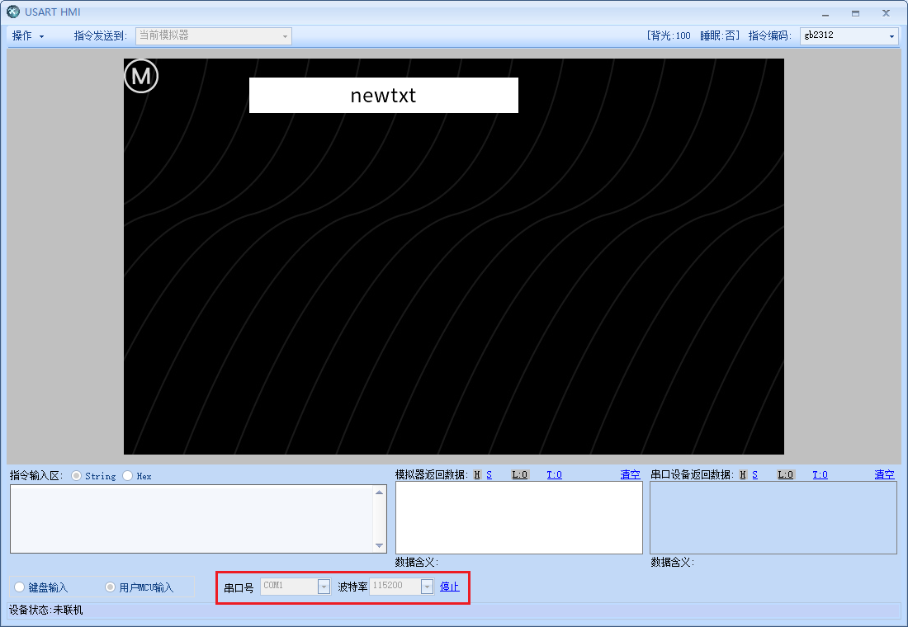
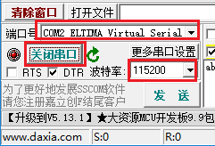
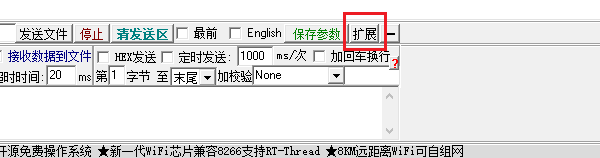
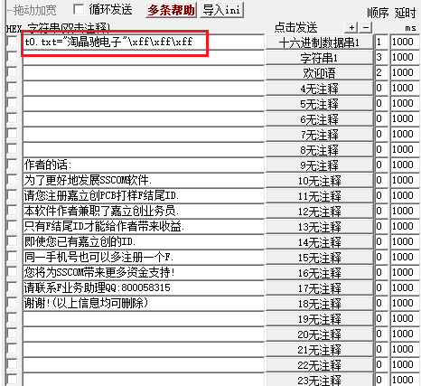
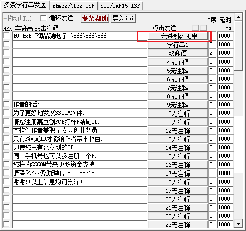
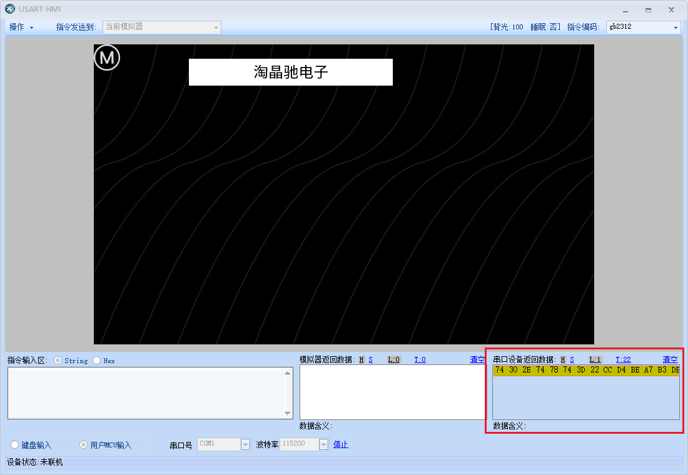

串口助手软件(sscom)和串口屏模拟器联调1
串口通讯工具sscom5.13.1下载链接：
电脑需要装一个虚拟串口工具vspd下载链接：
打开虚拟串口，添加一对串口，如果已经存在虚拟串口，就不用继续添加了。
在安装好了VSPD之后,添加一对虚拟串口

添加后如图所示

进入串口屏调试界面,选择用户mcu输入,串口号选择com1,波特率115200,点击开始

串口助手请使用SSCOM5.13.1版本，根据实际情况设置端口号和波特率，不要勾选“加回车换行”
打开sscom,串口号选择com2(与com1互为1对串口),波特率115200,点击打开串口

点击拓展按钮,让侧边栏显示出来

将第一栏编辑为如下指令,注意去掉前面的勾选

注意
\xff\xff\xff是结束符
指令如下:
t0.txt="淘晶驰电子"\xff\xff\xff
点击右侧按钮即可发送当前指令

此时右下角可以看到接收到了数据,同时t0文本也变成了淘晶驰电子

提示
用户mcu输入功能可以用来连接其他的串口软件或者单片机